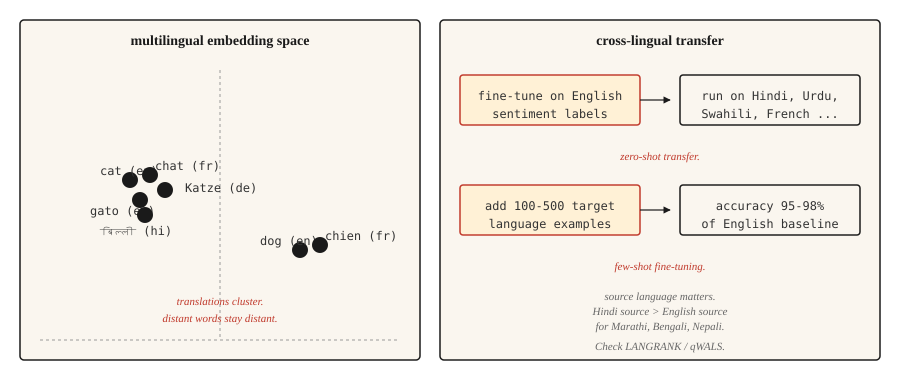

Home / NLP, Foundations to Advanced
Multilingual NLP
One model, 100+ languages, zero training data for most of them. Cross-lingual transfer is the practical miracle of the 2020s.
- Type
- Learn
- Languages
- Python
- Prerequisites
- Phase 5 · 04 (GloVe, FastText, Subword), Phase 5 · 11 (Machine Translation)
- Time
- ~45 minutes
#The Problem
English has billions of labeled examples. Urdu has thousands. Maithili has almost none. Any practical NLP system that serves a global audience has to work on the long tail of languages where task-specific training data does not exist.
Multilingual models solve this by training one model on many languages simultaneously. The shared representation lets the model transfer skills learned in high-resource languages to low-resource ones. Fine-tune the model on English sentiment analysis, and it produces surprisingly good sentiment predictions on Urdu out of the box. That is zero-shot cross-lingual transfer, and it has reshaped how NLP ships to the world.
This lesson names the tradeoffs, the canonical models, and the one decision that trips up teams new to multilingual work: picking a source language for transfer.
#The Concept

Shared vocabulary. Multilingual models use a SentencePiece or WordPiece tokenizer trained on text from all target languages. The vocabulary is shared: the same subword unit represents the same morpheme across related languages. anti- in English and Italian gets the same token.
Shared representation. A transformer pretrained on masked language modeling across many languages learns that semantically similar sentences in different languages produce similar hidden states. mBERT, XLM-R, and NLLB all exhibit this. Embeddings for "cat" in English cluster near "chat" in French and "gato" in Spanish, and so do full-sentence embeddings.
Zero-shot transfer. Fine-tune the model on labeled data in one language (usually English). At inference, run it on any other language the model supports. No target-language labels needed. Results are strong for typologically related languages and weaker for distant ones.
Few-shot fine-tuning. Add 100-500 labeled examples in the target language. Accuracy jumps to 95-98% of the English baseline on classification tasks. This is the single most cost-effective lever in multilingual NLP.
#The models
| Model | Year | Coverage | Notes |
|---|---|---|---|
| mBERT | 2018 | 104 languages | Trained on Wikipedia. First practical multilingual LM. Weak on low-resource. |
| XLM-R | 2019 | 100 languages | Trained on CommonCrawl (much larger than Wikipedia). Sets the cross-lingual baseline. Base 270M, Large 550M. |
| XLM-V | 2023 | 100 languages | XLM-R with 1M-token vocabulary (vs 250k). Better on low-resource. |
| mT5 | 2020 | 101 languages | T5 architecture for multilingual generation. |
| NLLB-200 | 2022 | 200 languages | Meta's translation model; includes 55 low-resource languages. |
| BLOOM | 2022 | 46 languages + 13 programming | Open 176B LLM trained multilingually. |
| Aya-23 | 2024 | 23 languages | Cohere's multilingual LLM. Strong on Arabic, Hindi, Swahili. |
Pick by use case. Classification works well with XLM-R-base as the sane default. Generation tasks call for mT5 or NLLB depending on translation vs open generation. LLM-style work pairs with Aya-23 or Claude using explicit multilingual prompting.
#The source-language decision (2026 research)
Most teams default to English as the fine-tuning source. Recent research (2026) shows this is often wrong.
Language similarity predicts transfer quality better than raw corpus size. For Slavic targets, German or Russian often beat English. For Indic targets, Hindi often beats English. The qWALS similarity metric (2026, based on World Atlas of Language Structures features) quantifies this. LANGRANK (Lin et al., ACL 2019) is a separate, earlier method that ranks candidate source languages from a combination of linguistic similarity, corpus size, and genetic relatedness.
Practical rule: if your target language has a typologically close high-resource relative, try fine-tuning on that one first, then compare to English fine-tune.
#Build It
#Step 1: zero-shot cross-lingual classification
from transformers import AutoTokenizer, AutoModelForSequenceClassification
import torch
tok = AutoTokenizer.from_pretrained("joeddav/xlm-roberta-large-xnli")
model = AutoModelForSequenceClassification.from_pretrained("joeddav/xlm-roberta-large-xnli")
def classify(text, candidate_labels, hypothesis_template="This text is about {}."):
scores = {}
for label in candidate_labels:
hypothesis = hypothesis_template.format(label)
inputs = tok(text, hypothesis, return_tensors="pt", truncation=True)
with torch.no_grad():
logits = model(**inputs).logits[0]
entail_score = torch.softmax(logits, dim=-1)[2].item()
scores[label] = entail_score
return dict(sorted(scores.items(), key=lambda x: -x[1]))
print(classify("I love this product!", ["positive", "negative", "neutral"]))
print(classify("मुझे यह उत्पाद पसंद है!", ["positive", "negative", "neutral"]))
print(classify("J'adore ce produit !", ["positive", "negative", "neutral"]))One model, three languages, same API. XLM-R trained on NLI data transfers well to classification via the entailment trick.
#Step 2: multilingual embedding space
from sentence_transformers import SentenceTransformer
import numpy as np
model = SentenceTransformer("sentence-transformers/paraphrase-multilingual-MiniLM-L12-v2")
pairs = [
("The cat is sleeping.", "Le chat dort."),
("The cat is sleeping.", "El gato está durmiendo."),
("The cat is sleeping.", "Die Katze schläft."),
("The cat is sleeping.", "The dog is barking."),
]
for eng, other in pairs:
emb_eng = model.encode([eng], normalize_embeddings=True)[0]
emb_other = model.encode([other], normalize_embeddings=True)[0]
sim = float(np.dot(emb_eng, emb_other))
print(f" {eng!r} <-> {other!r}: cos={sim:.3f}")Translations land close in embedding space. A different English sentence lands further. This is what makes cross-lingual retrieval, clustering, and similarity work.
#Step 3: few-shot fine-tuning strategy
from transformers import TrainingArguments, Trainer
from datasets import Dataset
def few_shot_finetune(base_model, base_tokenizer, examples):
ds = Dataset.from_list(examples)
def tokenize_fn(ex):
out = base_tokenizer(ex["text"], truncation=True, max_length=128)
out["labels"] = ex["label"]
return out
ds = ds.map(tokenize_fn)
args = TrainingArguments(
output_dir="out",
per_device_train_batch_size=8,
num_train_epochs=5,
learning_rate=2e-5,
save_strategy="no",
)
trainer = Trainer(model=base_model, args=args, train_dataset=ds)
trainer.train()
return base_modelFor 100-500 target-language examples, num_train_epochs=5 and learning_rate=2e-5 are the safe defaults. Higher learning rates cause the multilingual alignment to collapse and you get an English-only model.
#Evaluation that actually works
- Per-language accuracy on held-out sets. Not aggregated. The aggregate hides the long tail.
- Benchmark against monolingual baseline. For languages with enough data, a monolingual model trained from scratch sometimes beats the multilingual one. Test.
- Entity-level tests. Named entities in the target language. Multilingual models often have weak tokenization for scripts far from Latin.
- Cross-lingual consistency. Same meaning in two languages should produce the same prediction. Measure the gap.
#Use It
The 2026 stack:
| Task | Recommended |
|---|---|
| Classification, 100 languages | XLM-R-base (~270M) fine-tuned |
| Zero-shot text classification | joeddav/xlm-roberta-large-xnli |
| Multilingual sentence embeddings | sentence-transformers/paraphrase-multilingual-MiniLM-L12-v2 |
| Translation, 200 languages | facebook/nllb-200-distilled-600M (see lesson 11) |
| Generative multilingual | Claude, GPT-4, Aya-23, mT5-XXL |
| Low-resource language NLP | XLM-V or a domain-specific fine-tune on related high-resource language |
Always budget for fine-tuning in the target language if performance matters. Zero-shot is a starting point, not a final answer.
#The tokenization tax (what goes wrong for low-resource languages)
Multilingual models share one tokenizer across all their languages. That vocabulary is trained on a corpus dominated by English, French, Spanish, Chinese, German. For any language outside the dominant set, three taxes compound silently:
- Fertility tax. Low-resource language text tokenizes into far more tokens per word than English. A Hindi sentence can need 3-5x the tokens of an equivalent English sentence. That 3-5x eats your context window, training efficiency, and latency.
- Variant recovery tax. Every typo, diacritic variant, Unicode normalization mismatch, or case variation becomes a cold-start unrelated sequence in embedding space. The model cannot learn orthographic correspondences that a native speaker takes as obvious.
- Capacity spillover tax. Taxes 1 and 2 consume context positions, layer depth, and embedding dimensions. What remains for actual reasoning is systematically smaller than what a high-resource language gets from the same model.
The practical symptom: your model trains normally on Hindi, the loss curve looks right, eval perplexity looks reasonable, and production outputs are subtly wrong. Morphology collapses mid-sentence. Rare inflections stay unrecoverable. You cannot data-scale your way out of a broken tokenizer.
Mitigations: pick a tokenizer with good coverage for your target language (XLM-V's 1M-token vocabulary is a direct fix); verify tokenization fertility on held-out target text before training; use byte-level fallback (SentencePiece byte_fallback=True, GPT-2-style byte-level BPE) for truly long-tail scripts so nothing is ever OOV.
#Ship It
Save as outputs/skill-multilingual-picker.md:
---
name: multilingual-picker
description: Pick source language, target model, and evaluation plan for a multilingual NLP task.
version: 1.0.0
phase: 5
lesson: 18
tags: [nlp, multilingual, cross-lingual]
---
Given requirements (target languages, task type, available labeled data per language), output:
1. Source language for fine-tuning. Default English; check LANGRANK or qWALS if target language has a typologically close high-resource language.
2. Base model. XLM-R (classification), mT5 (generation), NLLB (translation), Aya-23 (generative LLM).
3. Few-shot budget. Start with 100-500 target-language examples if available. Zero-shot only if labeling is infeasible.
4. Evaluation plan. Per-language accuracy (not aggregate), cross-lingual consistency, entity-level F1 on non-Latin scripts.
Refuse to ship a multilingual model without per-language evaluation — aggregate metrics hide long-tail failures. Flag scripts with low tokenization coverage (Amharic, Tigrinya, many African languages) as needing a model with byte-fallback (SentencePiece with byte_fallback=True, or byte-level tokenizer like GPT-2).#Exercises
- Easy. Run the zero-shot classification pipeline on 10 sentences per language across English, French, Hindi, and Arabic. Report accuracy on each. You should see strong French, decent Hindi, variable Arabic.
- Medium. Use
paraphrase-multilingual-MiniLM-L12-v2to build a cross-lingual retriever over a small mixed-language corpus. Query in English, retrieve documents in any language. Measure recall@5. - Hard. Compare English-source and Hindi-source fine-tuning for a Hindi classification task. Use 500 target-language examples for few-shot fine-tuning under both regimes. Report which source produces better Hindi accuracy and by how much. This is the LANGRANK thesis in miniature.
#Key Terms
| Term | What people say | What it actually means |
|---|---|---|
| Multilingual model | One model, many languages | Shared vocabulary and parameters across languages. |
| Cross-lingual transfer | Train on one language, run on another | Fine-tune on source, evaluate on target without target-language labels. |
| Zero-shot | No target-language labels | Transfer without fine-tuning on the target language. |
| Few-shot | Small target labels | 100-500 target-language examples used for fine-tuning. |
| mBERT | First multilingual LM | 104-language BERT pretrained on Wikipedia. |
| XLM-R | Standard cross-lingual baseline | 100-language RoBERTa pretrained on CommonCrawl. |
| NLLB | Meta's 200-language MT | No Language Left Behind. Includes 55 low-resource languages. |
#Further Reading
- Conneau et al. (2019). Unsupervised Cross-lingual Representation Learning at Scale — the XLM-R paper.
- Pires, Schlinger, Garrette (2019). How Multilingual is Multilingual BERT? — the analysis paper that started the cross-lingual transfer research line.
- Costa-jussà et al. (2022). No Language Left Behind — NLLB-200 paper.
- Üstün et al. (2024). Aya Model: An Instruction Finetuned Open-Access Multilingual Language Model — Aya, Cohere's multilingual LLM.
- Language Similarity Predicts Cross-Lingual Transfer Learning Performance (2026) — the qWALS / LANGRANK source-language paper.
Nice. That's 6 minutes of NLP, Foundations to Advanced behind you.
Continue to Subword Tokenization — BPE, WordPiece, Unigram, SentencePiece →